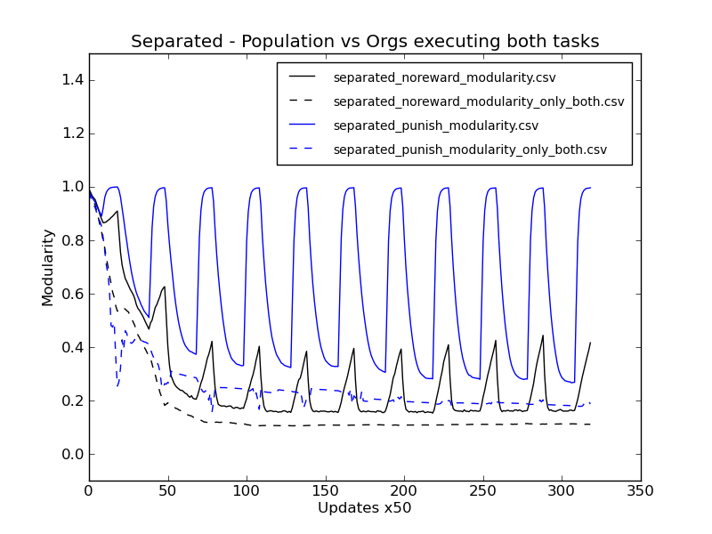
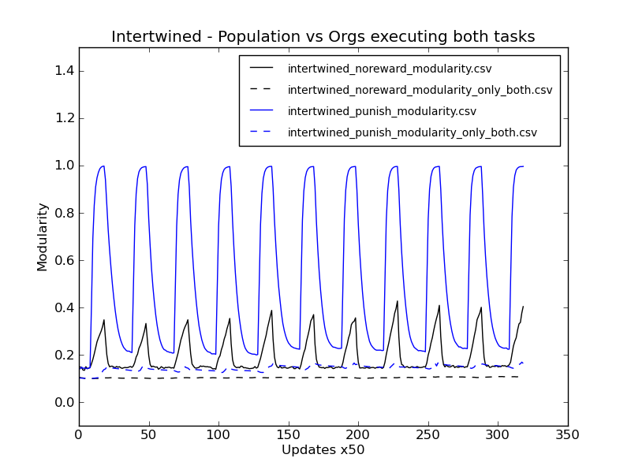
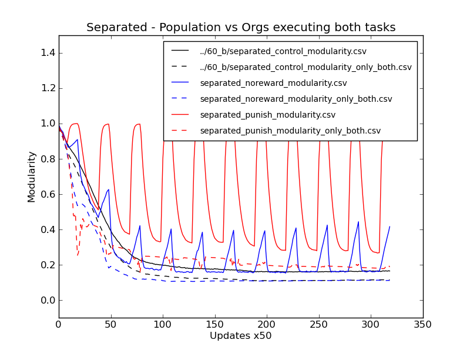
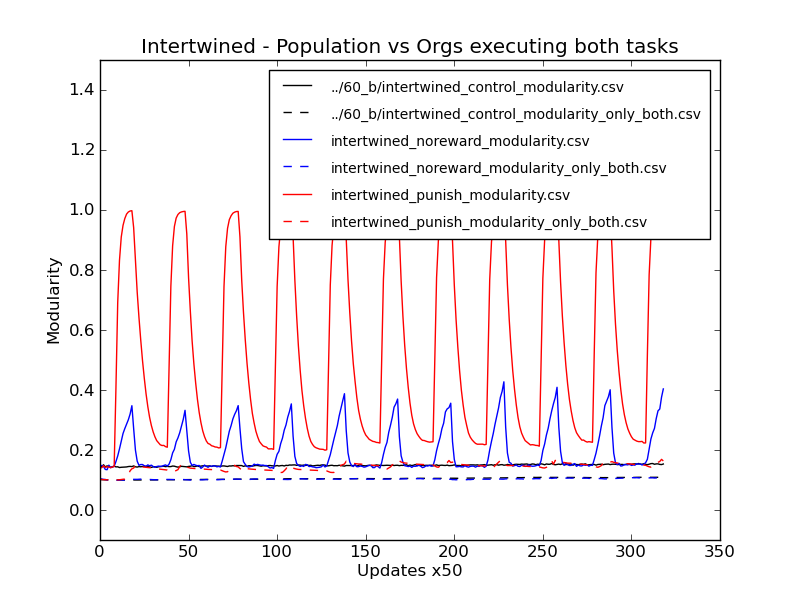
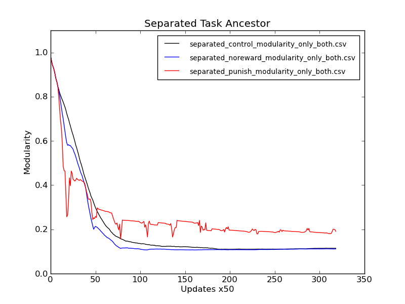
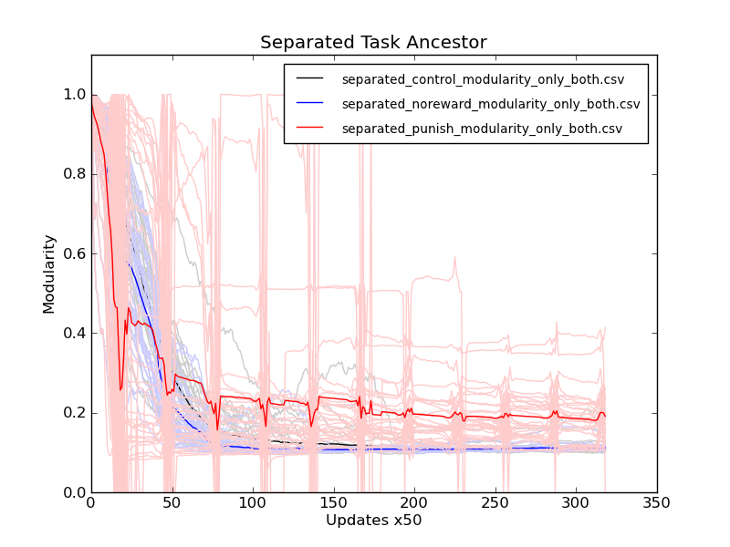

Week of January 23, 2012
Monday 1/23/12
2:17 PM
STATUS:
- Delightfully enough, over half of the 060 HPC jobs were walltime killed. Resubmitted with longer wall times. Sigh.
- Also resubmitted reanalysis jobs (059 try 3). Hopefully it will get queued before forever goes by. :/
PLAN:
- Will try to download/salvage what I can from the dead 060 jobs. It looks like the punishment runs were able to finish before being killed, along with a handful of the control and no punishment jobs. I can pull the data down for those, and go from there.
LOG:
- Playing with perl command line scripting. Just did a nice split coming from an ls. Could easily be used any input.
[caninoko@gateway]:[62]:[/mnt/scratch/caninoko/060]:$ ls -la *.tar.gz | perl -n -e 'chomp; @content = split(/ /); if (int(@content[7]) < 300) { print "rm @content[10];\n"; }'
rm noreward_intertwined_600004.tar.gz;
rm noreward_intertwined_600006.tar.gz;
rm noreward_intertwined_600007.tar.gz;
rm noreward_intertwined_600009.tar.gz;
rm noreward_intertwined_600010.tar.gz;
rm noreward_intertwined_600011.tar.gz;
rm ;
rm noreward_intertwined_600015.tar.gz;
rm ;
rm noreward_intertwined_600017.tar.gz;
rm noreward_intertwined_600018.tar.gz;
rm noreward_intertwined_600019.tar.gz;
rm noreward_intertwined_600021.tar.gz;
rm noreward_intertwined_600022.tar.gz;
rm noreward_intertwined_600023.tar.gz;
rm noreward_intertwined_600024.tar.gz;
rm noreward_intertwined_600025.tar.gz;
rm noreward_intertwined_600026.tar.gz;
rm noreward_intertwined_600027.tar.gz;
rm noreward_intertwined_600028.tar.gz;
rm ;
rm noreward_separated_600001_bak.tar.gz;
rm ;
rm noreward_separated_600003.tar.gz;
rm noreward_separated_600004.tar.gz;
rm noreward_separated_600005.tar.gz;
rm noreward_separated_600006.tar.gz;
rm noreward_separated_600007.tar.gz;
rm noreward_separated_600008.tar.gz;
rm noreward_separated_600010.tar.gz;
rm noreward_separated_600011.tar.gz;
rm noreward_separated_600012.tar.gz;
rm noreward_separated_600015.tar.gz;
rm noreward_separated_600016.tar.gz;
rm noreward_separated_600017.tar.gz;
rm ;
rm ;
rm ;
rm noreward_separated_600022.tar.gz;
rm ;
rm ;
rm ;
rm noreward_separated_600028.tar.gz;
- Copied over the data in the usual way.
- Performing analysis as below:
rosiec@atlantis:~/research/Devolab Research/evolution_of_modularity/raw_data/060$ rm separated_noreward_modularity.csv; for i in noreward_sep*; do cd $i/data/; python ../../../../../scripts/common\ modules\ and\ helper\ scripts/extract_single_column_to_csv.py --dimensionality 1 8 modularity-???.dat* modularity-????.dat* modularity-?????.dat* >> ../../separated_noreward_modularity.csv; cd ../../; done
rosiec@atlantis:~/research/Devolab Research/evolution_of_modularity/raw_data/060$ rm separated_noreward_modularity_only_both.csv; for i in noreward_sep*; do cd $i/data/; python ../../../../../scripts/common\ modules\ and\ helper\ scripts/extract_single_column_to_csv.py --dimensionality 1 8 modularity_*-???.dat* modularity_*-????.dat* modularity_*-?????.dat* >> ../../separated_noreward_modularity_only_both.csv; cd ../../; done
- Etc.
- Modified plot_from_csv.py to accept a –e argument which directs it to do every-other line as dashed, while keeping the same colors, in pairs.
- Generated the plot (from very little data), showing the differences between the whole population modularity fluctuations vs only those organisms that are doing both tasks.


Tuesday 1/24/12
12:13 PM
STATUS:
- Job 060 (resubmitted) was close enough to finished that I’m just pulling the data and graphing it. Currently zipping.
- Resubmitted Job 059 because it turns out that a walltime of 12 hours was not long enough. Made it 24 and resubmitted all the jobs.
LOG:
- Copied the control data from 060_b and graphed it against the data from 060.
[rosiec@caninoko-2]:[17]:[/Volumes/Atlantis/research/Devolab Research/evolution_of_modularity/raw_data/060]:$ python ../../../scripts/generate_graphs_from_raw_data/plot_from_csv.py -o -e -t "Separated - Population vs Orgs executing both tasks" -x "Updates x50" -y "Modularity" ../60_b/comparitive_modularity__separated__pop_vs_two_task.png ../60_b/separated_control_modularity.csv ../60_b/separated_control_modularity_only_both.csv separated_noreward_modularity.csv separated_noreward_modularity_only_both.csv separated_punish_modularity.csv separated_punish_modularity_only_both.csv
[rosiec@caninoko-2]:[17]:[/Volumes/Atlantis/research/Devolab Research/evolution_of_modularity/raw_data/060]:$ python ../../../scripts/generate_graphs_from_raw_data/plot_from_csv.py -o -e -t "Intertwined - Population vs Orgs executing both tasks" -x "Updates x50" -y "Modularity" ../60_b/comparitive_modularity__intertwined__pop_vs_two_task.png ../60_b/intertwined_control_modularity.csv ../60_b/intertwined_control_modularity_only_both.csv intertwined_noreward_modularity.csv intertwined_noreward_modularity_only_both.csv intertwined_punish_modularity.csv intertwined_punish_modularity_only_both.csv


- Produced bash script to split up population (detail.spop) into organisms, and then calculating the modularities for each. Will graph out using a scatter plot thing.
3:33 PM
TODO:
- Sign up for Terra Grid account. :/
- Write this crap up
- Generate organismal scatter graph for each sample time.
- Apply for EEBB.
- Prepare robots for USA Science Fair
Lab Mtg Notes:
- For paper, consider the effect of switching environments on genetic architecture
- Functional modularity
- Little effect on functional modularity. Stuff does not overlap any less if it doesn’t need to.
- Functional non-modularity is strongly selected for, for efficiency, regardless of treatment.
- Physical modularity
- Punishment has big effect on physical modularity vs control
- Scatter effect. Hypothesis: scatter is maintained because it is easier to evolve back to a task when there is more space for an instruction to appear.
- Find a measure of physical modularity in the modularity analyze mode output.
- Produce a figure that shows physical/functional modularity effects.
- Foursquare?
- Two axes, placement of runs, treatments by color? See where they cluster.
- Show figures of scatter effect
- Focus on term “entanglement” for clarity, rather than using modularity. So, flip the graph on its head.
- Focus on dashed lines – ignore whole population
- Include discussions of scatter (because of higher chance for stuff to evolve back)
- Include in graph a line showing how many organisms are doing 0 1 or 2 tasks (on top of above graph)
- Paper guide: First limited Tim Cooper Paper – 2000 or 2002 – Alife
- Alife 13 website for Latex paper
- Short papers! (< 8 pages)
Wednesday 1/25/12
2:02 AM
THOUGHTS:
- For blog post article - title
- How changing fitness landscapes can reshape genetic architectures
- The role of fluctuating fitness landscapes on evolvability
- Think about hypotheses
- Does scatter effect potentiate evolution by spreading out the components of tasks such that they can more easily be coopted by new tasks?
- Does scatter improve evolvability?
- Do fluctuating landscapes allow for crossing of fitness valleys to fitness areas with better evolvability?
- There is a definite evolutionary pressure to compact things as close as possible. If so, why do we see the opposite patterns in natural organismal genomes?
- Periods of flux create rapid evolutionary adaptation, and periods of calm result in compact and efficient genomes.
- Either way, the fluctuating fitness landscape allows more easy crossing of fitness valleys.
- Punishment fitness pressures create environments that encourage and maintain the scattering of genomic components, breaking up clumps of functionality
- This can be done without the attendant comparative fitness drop because everyone suffers in the environment.
- Test this by starting with clumped together tasks. Evolve competition against evolved scattered tasks. See which lineages more quickly develop new tasks.
- A-Life Paper
- Fluctuating fitness landscapes as bridges over fitness valleys
- Competing pressures
- Compactness and efficiency vs. Evolvability
- Define functional modularity, physical modularity, entanglement… different word? Overlap? Intertwine, Interweave, Compound, Conglomerate, Aggregate, Blend, Cluster, Assemblage, Mixture, Conglomeration, Glom, Admixture. Compounding, Convergence, Combine, Combination, Meld, Intermingle, Merge, Couple, Join, Unite.
4:56 PM
STATUS
- Made a bash command to look through the .tar.gz files in a directory, and tar up the directories that aren’t already there.
[caninoko@dev-intel07]:[95]:[/mnt/scratch/caninoko/060__b]:$ for i in *_??????; do if [ ! -e $i.tar.gz ] ; then tar -cvf $i.tar.gz $i ; else : ; fi; done
- Alternatively, move the detail files out to the populations/ directory before tar-ing up.
[caninoko@dev-intel07]:[95]:[/mnt/scratch/caninoko/060__b]:$ mkdir populations/; for i in *_??????; do if [ ! -e $i.tar.gz ] ; then mkdir $i/data/populations/; mv $i/data/detail* $i/data/populations/; mv $i/data/populations/ ./populations/$i; tar -cvf $i.tar.gz $i ; else : ; fi; done
- Found a nice set of bash references for if/then
- Submitted job 059__batch3 with a 32 hour walltime cutoff to catch those 40 jobs that STILL didn’t finish. :/
TODO
- Gather together the robots for Darwin day – Feb 12.
LOG:
- Graphed out the two-task modularity from run 060 (median only, and all runs)

- If you include the individual runs, you can see that the punishment data is very noisy. In fact, I suspect it’s that there simply aren’t enough individuals doing both tasks at the peaks of the punishment phase to give a coherent picture of what’s going on.
TODO:
Figure out how to display phases as background for the graph.Figure out how to similarly graph the number of individuals on the opposite axis. Maybe do it as a fraction? That would be way easier.
LOG:
- Submitted job 061 which reanalyzes jobs 056, 057, and 060b, calculating the population and two-task modularity of each organism individually. This information can then be graphed as a cloud for each sample point (50x updates) for each run.
SUMMARY – current items of interest:
- 056_Modularity_Over_Time__XOR_EQU_start_sooner
- Data Generation: 1000 update cycle, separated ancestor. Symmetrical phases (500x2)
- Analyze: Population Modularity
- 057_Modularity_Over_Time__XOR_EQU_interwined
- Data Generation: 1000 update cycle, intertwined ancestor. Symmetrical phases (500x2)
- Analyze: Population Modularity
- 060b_Modularity_Over_Time__XOR_EQU_longer_recovery_only
- Data Generation: 1500 update cycle, both separated and intertwined ancestors. 500u treatment phase, 1000u recovery phase.
- Analyze: Population Modularity; Two-Task Modularity
- 059_Reanalyze_056_057
- Data Generation: None
- Analyze: Two-Task Modularity (of 056 and 057)
- 061_Reanalize_056_057_060b
- Data Generation: None
- Analyze: Organism Modularity; Two-Task Organism Modularity (of 056, 057, and 060b)
Thursday 1/26/12
3:54 PM
STATUS:
- HPC is down. Further, some of my runs seem to have crashed. All of 061 for 057 crashed immediately, while 056 seemed ok. So, something directory specific (probably during the copy part) is probably going on.
- Will soon start writing for blog post. Sigh. At least my figures and analyzed data are local.
TODO:
When HPC comes back up, restart runs that were affectedFix 057 (and maybe 060b) sources in run 061.
9:49 PM
STATUS:
- Made up first draft of Beacon Blog post. Will revise tomorrow and turn it in. On time! :P
Saturday 1/28/12
8:02 PM
STATUS:
- Job 061 seems to be finished. Moving and copying data back.
LOG:
- Dang 061 halfway failed. Fixed, and resubmitted.
- Tarring up and copying back data that I can, which is 056 and 057. Sadly, it looks like chunks of 056 didn’t finish in 32 hours either. :(